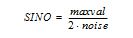

sino
NAME
sino - Calculate signal to noise ratio (1D)
SYNTAX
sino [real] [noprint]
DESCRIPTION
The command sino calculates the signal to noise ratio of a 1D spectrum according to the formula:

Where maxval is highest intensity in the signal region. The signal region is determined by the processing parameters SIGF1 and SIGF2. If SIGF1 = SIGF2, the signal region is defined by:
- The entire spectrum without the first 16th part of the data points, unless the scaling region file is defined (see next bullet item).
- The regions defined in the solvent table entry NUC1.SOLVENT where NUC1 and SOLVENT are acquisition status parameters.
The factor noise is calculated according to the algorithm shown in:
Where N is the total number of points in the noise region, n = (N-1)/2, and y(i) is the nth point in the noise region. The limits of the noise region are determined by the processing parameters NOISF1 and NOISF2. If they are equal, the first 16th part of the spectrum is used as the noise region.
The parameters SIGF1, SIGF2, NOISF1 and NOISF2 can be set from the command line, from the Procpars tab (command edp) or, interactively, in Signal/Noise display mode. The latter can be entered by clicking Analyse | SiNo | Signal/Noise ratio: Calculate (sino) or by entering .sino on the command line.
sino internally performs a peak picking to determine the highest peak in the signal region.
The result of sino appears on the screen, for example:
sino without any argument calculates the signal to noise on the real part of data (1r)
sino real performs in the same way as sino: only real part of spectra is used
sino mag first performs a magnitude calculation of the signal region and then uses this data for the calculation. This makes the S/N value independent on a signal phase.
sino noprint does not show the result on the screen. The noprint option is automatically set when sino is part of an AU program. The result of sino is stored in the processing status parameter SINO which can be viewed with s sino or dpp.
The noprint option can be combined with the options described above: sino mag noprint would calculate the S/N on magnitude data without showing the dialog.
The parameter SINO exists as processing parameter (edp) and as processing status parameter (dpp) and they have different functions. The latter is used to store the result of the command sino as discussed above. The former can be used to specify a signal to noise ratio which must be reached in an acquisition (see the parameter SINO in List of Processing Parameters and the AU program au_zgsino).
INPUT PARAMETERS
Set in .sino display mode, with edp or by typing noisf1, noisef2 etc.:
NOISF1 - low field (left) limit of the noise region
NOISF2 - high field (right) limit of the noise region
SIGF1 - low field (left) limit of the signal region
SIGF2 - high field (right) limit of the signal region
Set by the acquisition, can be viewed with dpa or by typing s nuc1 etc.:
NUC1 - observe nucleus
SOLVENT - sample solvent
OUTPUT PARAMETERS
Can be viewed with dpp or by typing s sino :
SINO - signal to noise ratio
INPUT FILES
<dir>/data/<user>/nmr/<name>/<expno>/pdata/<procno>/
1r - real processed 1D data
1i - imaginary processed data (not used for sino real)
proc - processing parameters
OUPUT FILES
<dir>/data/<user>/nmr/<name>/<expno>/pdata/<procno>/
procs - processing status parameters
USAGE IN AU PROGRAMS
SINO
SEE ALSO
abs, absf, absd, bas, Analysis Commands, List of Processing Parameters